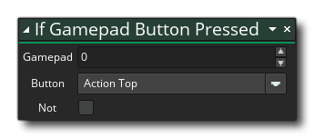

Descripción
Con esta acción puedes sondear el gamepad para ver si se está presionando algún botón. La acción volverá true cada paso que se presiona (y mantiene) pulsado el botón del gamepad, o false de lo contrario, aunque si hace clic en not modificador puede verificar si el botón no se está presionando, es decir: la acción volverá true mientras no se presiona ningún botón false si hay. Si solo necesita marcar un solo botón, presione la acción si el botón del gamepad está presionado.
Tenga en cuenta que para agregar acciones al bloque "if", deben soltarse al lado de la acción, como se muestra en la imagen siguiente:
Estas acciones ahora se ejecutarán si el "si" se evalúa como true, mientras que cualquier acción que se elimine en otro lugar se realizará después del bloque "if".
Sintaxis de acción:
Argumentos:
Argumento Descripción Gamepad El índice de gamepad. Button El nombre del botón para verificar Not Negar el cheque (verdadero se convierte en falso y viceversa)
Ejemplo:

El código de bloque de acción anterior sondea el estado del botón del gamepad 0 en cada paso y si se mantiene presionado un botón, comprueba si el botón inicial está presionado. Si el cheque es true en la pulsación inicial inicial, se reproduce un sonido, luego, mientras se mantiene presionado el botón, la mezcla de sprites se cambia a rojo. Si no se mantiene presionado el botón, se realiza una comprobación en el botón para restablecer el color de fusión a blanco.